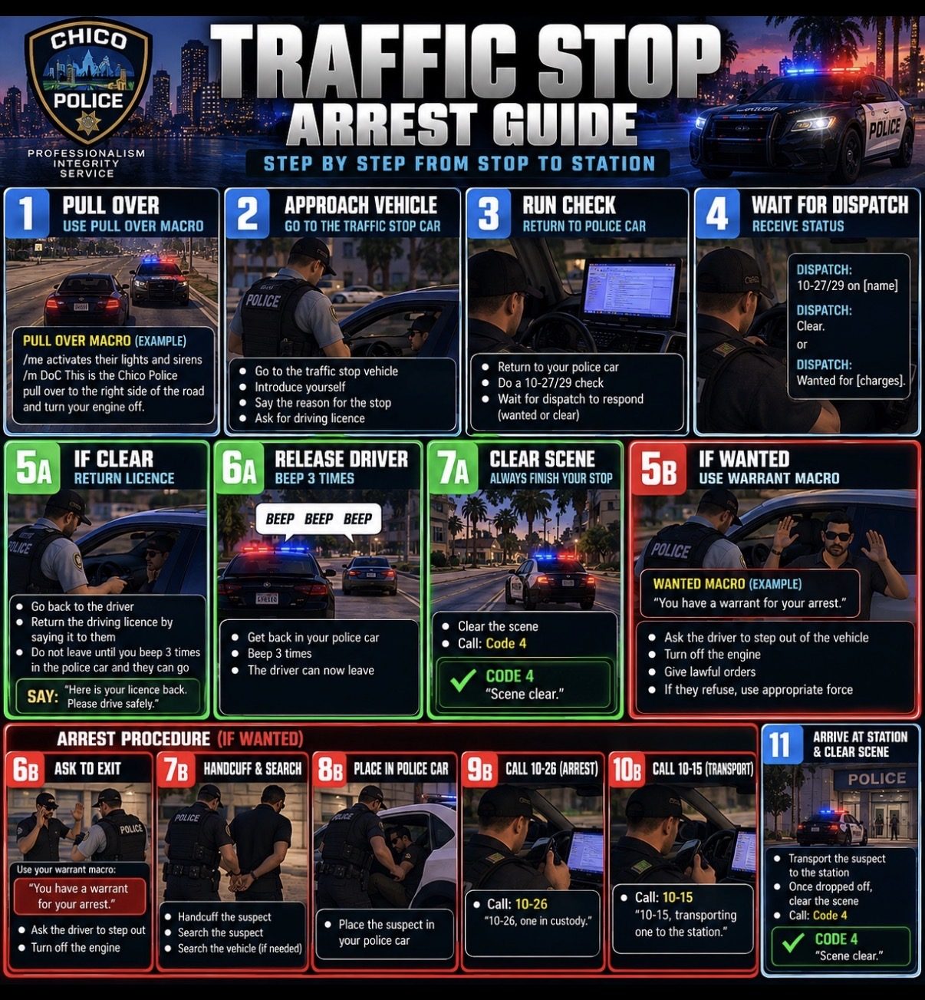
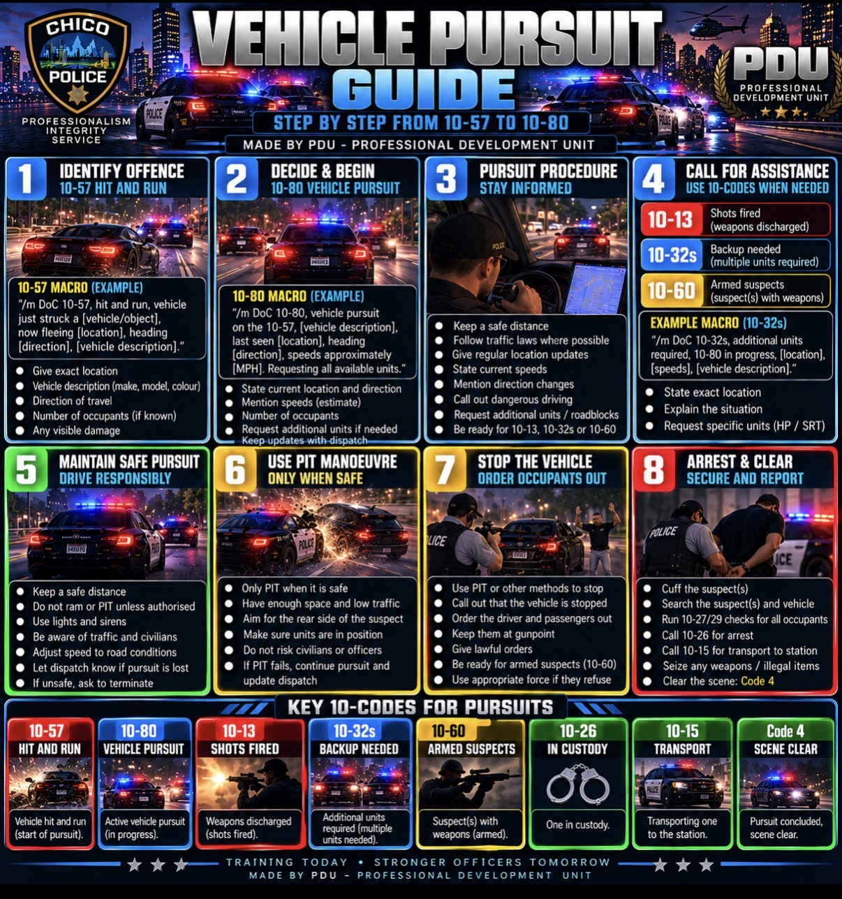
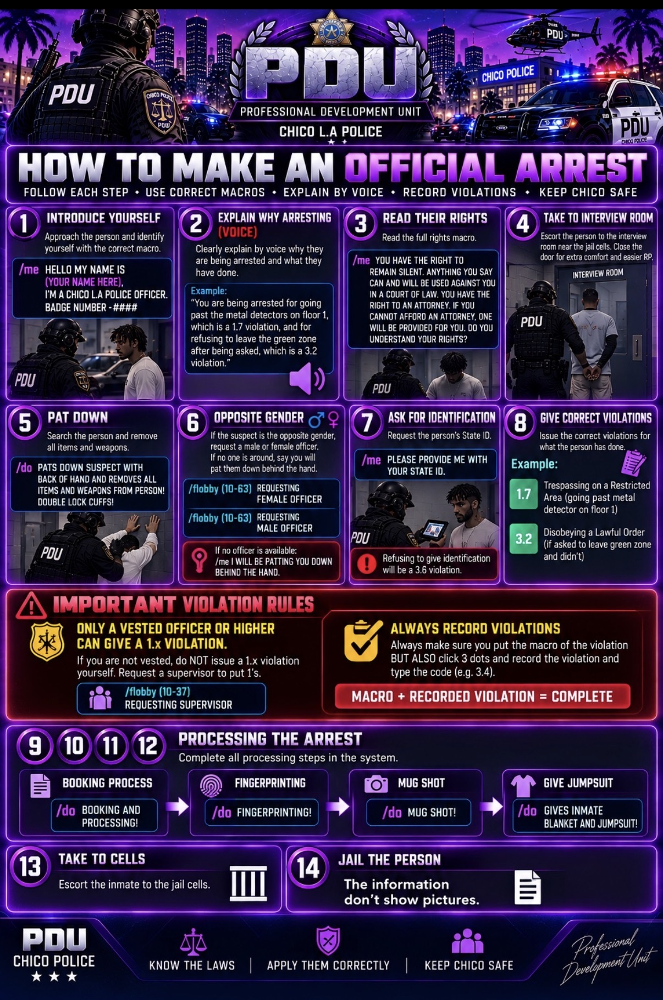
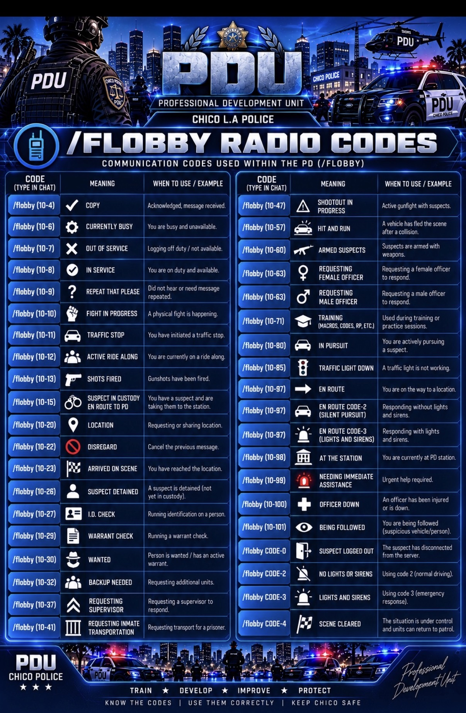

Step by step
Guides
The PDU training posters, with a short summary of what happens in each. Tap a poster to see it full size.
Traffic stop
Every stop starts the same way: pull them over, go to the vehicle, introduce yourself, give the reason and ask for their licence. Then return to your car, run a 10-27/29 check and wait for dispatch.
- If clear: return the licence, get back in your car, beep 3 times so they can go, then call Code 4.
- If wanted: use your warrant macro, get them out, cuff and search them, call 10-26 and 10-15, take them to the station, then call Code 4.


Vehicle pursuit
A pursuit starts with a 10-57 (hit and run) and becomes a 10-80 when the vehicle flees. Keep dispatch updated on location, speed and direction, and keep a safe distance.
- Call 10-13, 10-32s or 10-60 if things escalate.
- Only PIT when it is safe and authorised.
- Once stopped, order everyone out, cuff and search them, run their checks, call 10-26 and 10-15, then Code 4.


Official arrest
There are 14 steps from meeting the person to putting them in jail:
- Steps 1-3: introduce yourself, explain the arrest by voice and read their rights.
- Steps 4-7: go to the interview room, pat them down and ask for State ID. For the opposite gender, request an officer with a 10-63.
- Step 8: give the correct violations and record them.
- Steps 9-14: booking, fingerprints, mug shot and jumpsuit, then take them to the cells and jail them.


Radio codes
All department radio goes through /flobby. 10-codes tell everyone your status or what you need, and Code-0, 2, 3 and 4 cover logged-out suspects, driving response and clearing a scene.
The poster says when to use each one. To copy them, go to the radio macros.

